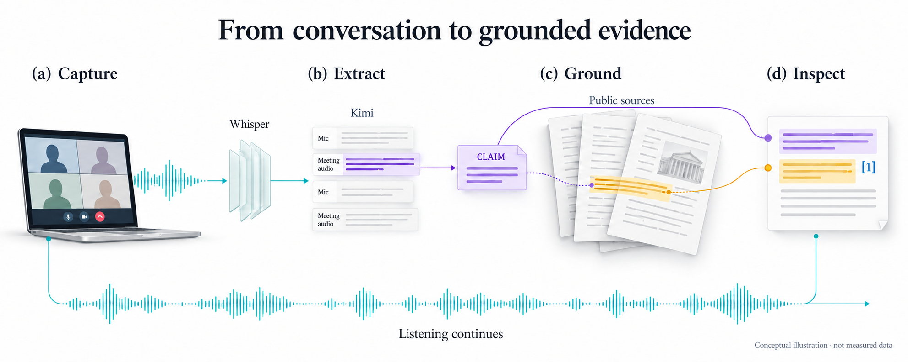
Information changes form while listening continues. Conceptual illustration, not a runtime screenshot or measured trace.
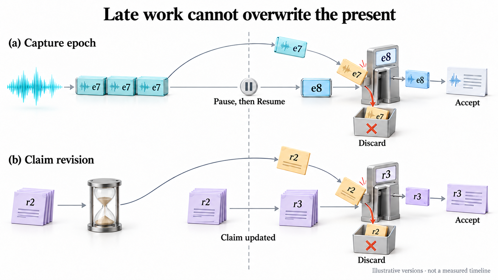
Obsolete epochs and revisions are rejected, not transformed into current work. Conceptual illustration, not a runtime screenshot or measured trace.
Technical reference and measurements
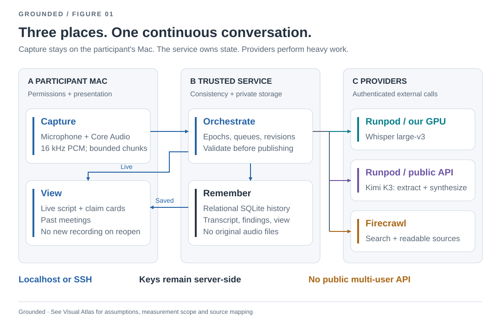
Ownership map, not a network topology. The local service may run on the same Mac or a trusted SSH-connected Mac. Whisper is our custom endpoint; Kimi is managed; Firecrawl is external.
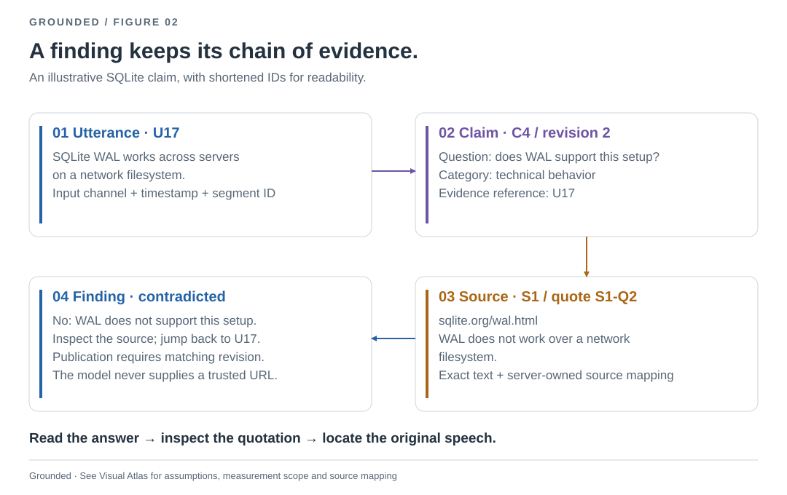
A concrete example: utterance U17 links to claim C4, retrieved source S1 and exact quote S1-Q2. These are illustrative labels, not actual API UUIDs. A quote establishes provenance, not infallible interpretation.
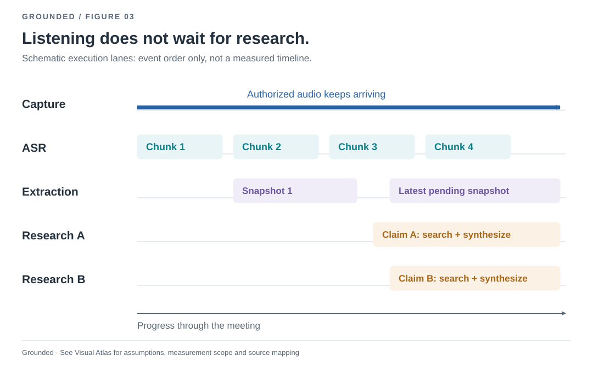
Audio capture continues while ordered ASR, single-flight claim extraction and two independent research workers operate. Bar widths do not encode measured durations. Queues are bounded; failure handling is explicit.
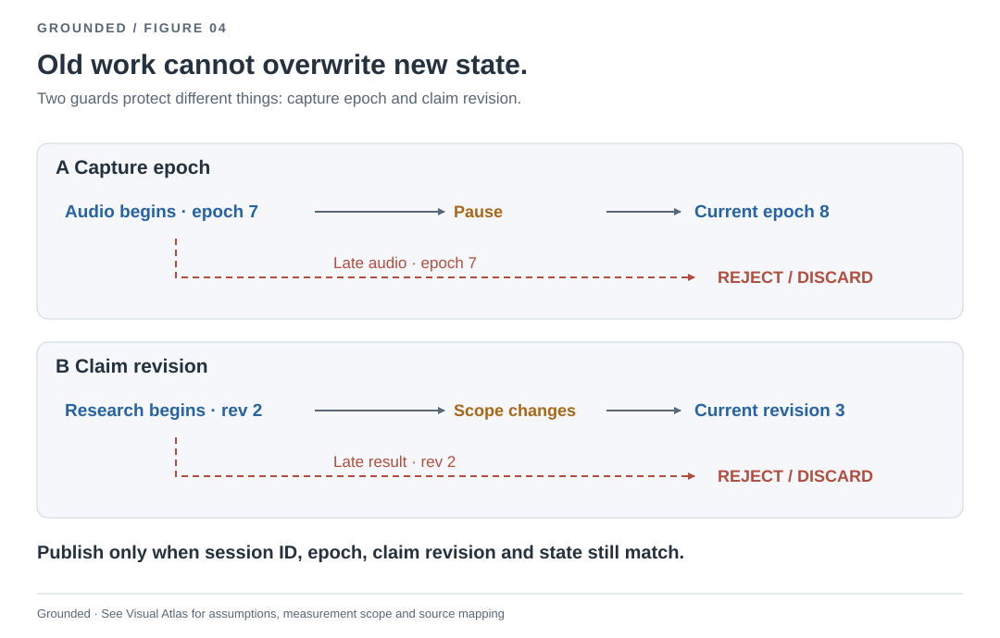
Schematic races after successful generation changes. Pause must first drain retained audio; failed drain preserves the epoch for recovery. After epoch advance stale uploads are rejected. Claim revision changes reject obsolete research results.
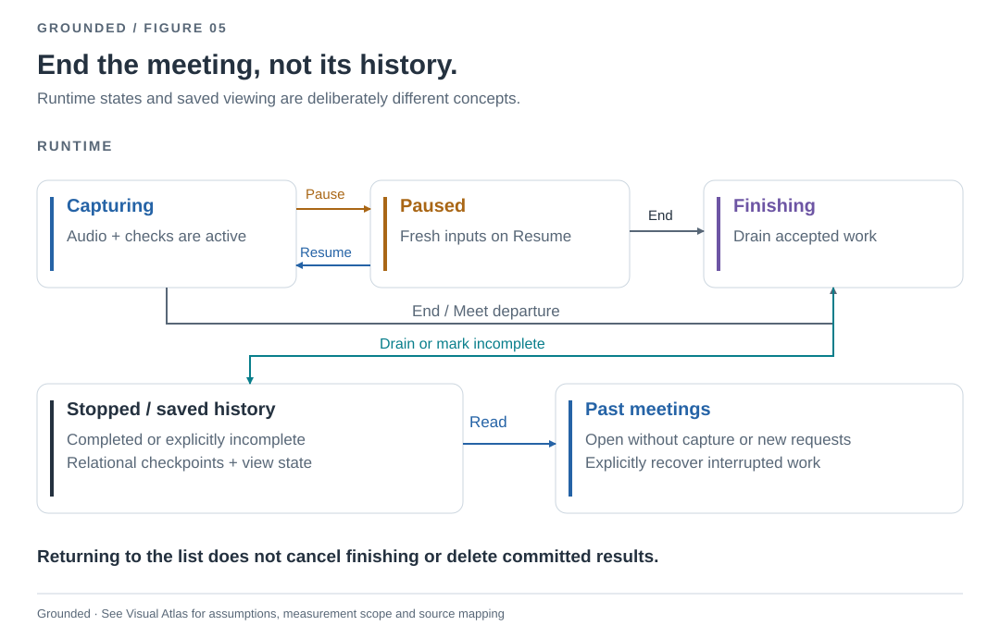
Capture ends before processing ends. Finishing drains accepted audio, extraction and research. Interrupted work requires explicit recovery; opening history never starts recording.
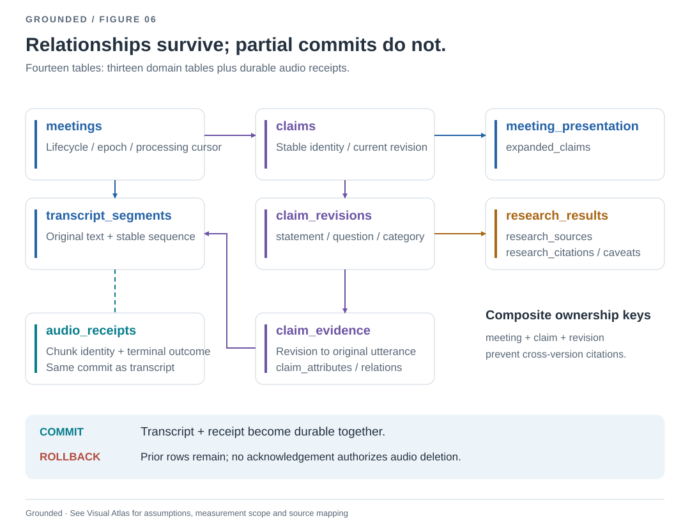
A grouped relational map, not every foreign key. Meeting-scoped composite keys link immutable transcript rows to claim revisions, research and citations. Audio outcome and receipt commit atomically before local deletion.
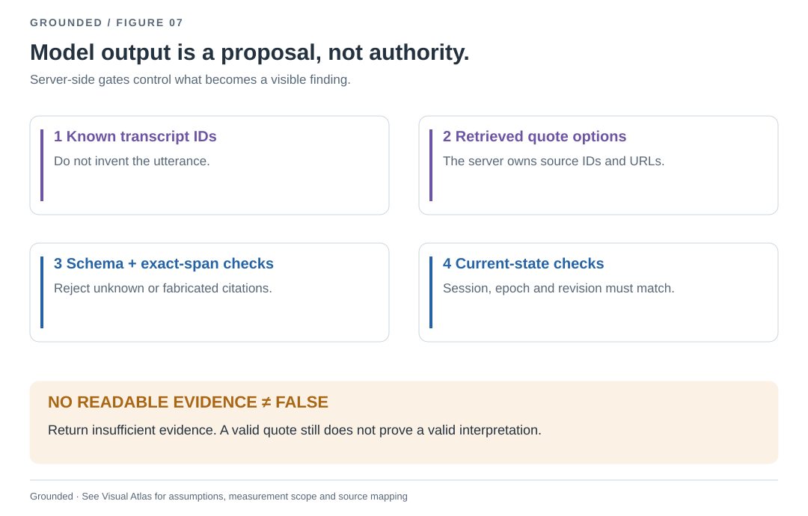
The server validates transcript references, source-specific quote IDs, exact quotation spans and current session/claim versions. These gates constrain provenance and shape, not the semantic truth of all model interpretations.
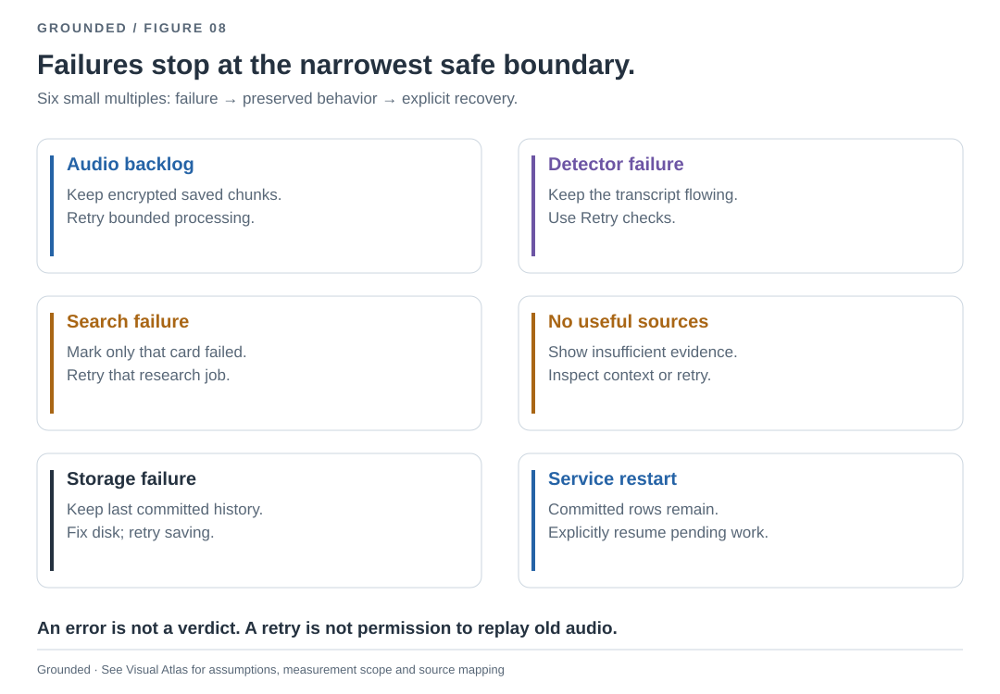
Research failures leave transcription running. Durable encrypted audio survives processing backlog; local storage exhaustion stops new intake without evicting retained chunks. Explicit recovery resumes interrupted work. These are mechanisms, not measured reliability percentages.
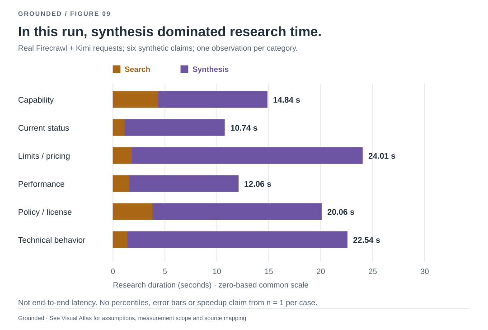
Research only: excludes capture, ASR, claim extraction and UI. Not percentiles or a production benchmark. Shared zero baseline, seconds. Search and synthesis are stacked; total labels include negligible validation/rounding overhead. Source hashes and values are in measurements.json.
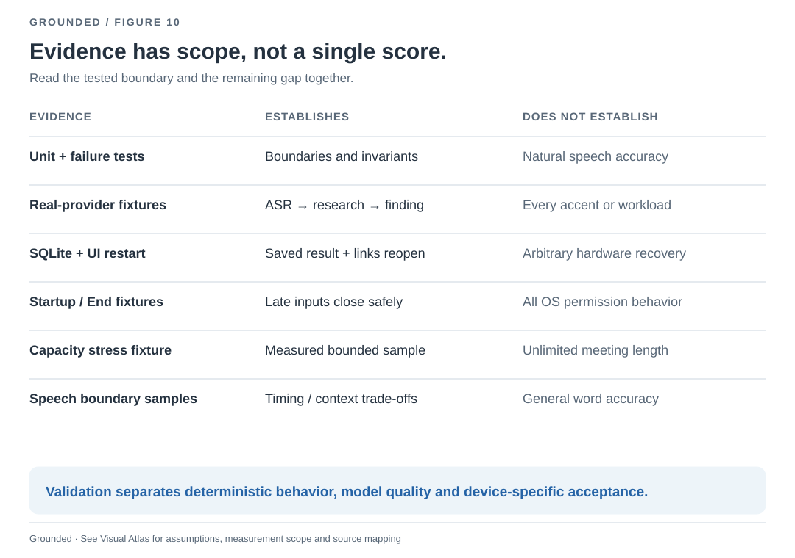
Automated invariants, real-provider synthetic runs, persistence checks and resource experiments establish different properties. Their counts are not a combined accuracy or reliability percentage.